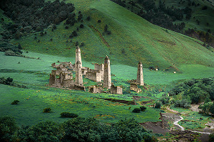

ВЫБЕРИ СВОЙ ТУР
-

Таргим
Гаппи (Гапп) — башенный поселок замкового типа у вершины горного хребта, который возвышается над речкой Кяхк-Хи, в ущелье Мужиг, граничащим с Тумгойским ущельем, в нескольких километрах от границы с Грузией. Состоит из хорошо сохранившейся пятиэтажной боевой башни, шести полуразрушенных жилых башенных строений, объединенных посредством протяженной каменной оборонительной стены в единый замковый комплекс.
Оформить -
.jpg) Альби-Ерды
Альби-Ерды
Каменная постройка сравнительно небольших размеров; ее отличительной особенностью является устройство при ней подземной склеповой усыпальницы. Как показали раскопки, многовековый культурный слой памятника был насыщен костными остатками жертвенных животных, приносившихся в дар языческим богам в период упадка христианства и превращения храма в языческое святилище. Предметные приношения были выявлены в зальной части храма и склеповой гробнице.
Оформить -
.jpg) Тори
Тори
Терта (Терти, Тертие) — крупный башенный поселок XIV-XVI вв. в западной части Малхистинского ущелья. На западе он граничит с Меши, а на востоке - с Итал-Чу. До середины 1990-х годов в центре комплекса располагался ансамбль с пятиэтажной боевой башней, ныне он полностью уничтожен, но сохранились шесть жилых построек, склеповый могильник и святилище-мавзолей с открытой поминальной камерой.
Оформить -
.jpg) Тхаба-Ерды
Тхаба-Ерды
Расположена на труднодоступном склоне горы Пане Цей-Лоамского горного хребта, в 1.7 км от пограничного поста при въезде в Джейрахский район по Ассинскому ущелью. По одному из преданий, в ней жила девушка, потерявшая братьев. Покорить её сердце смог юноша из рода Гагиевых. С тех пор в башне никто не живет. Тропа к ней осыпалась, башню можно увидеть в бинокль с автодороги.
Оформить -
.jpg) Девичья башня
Девичья башня
Расположена на труднодоступном склоне горы Пане Цей-Лоамского горного хребта, в 1.7 км от пограничного поста при въезде в Джейрахский район по Ассинскому ущелью. По одному из преданий, в ней жила девушка, потерявшая братьев. Покорить её сердце смог юноша из рода Гагиевых. С тех пор в башне никто не живет. Тропа к ней осыпалась, башню можно увидеть в бинокль с автодороги.
Оформить -
.jpg) Эгикал
Эгикал
Крупнейший башенный комплекс Ингушетии. Входит в пятерку достопримечательностей, которые следует посмотреть в первую очередь. В прошлом тут было 11 боевых башен, сейчас в полную высоту сохранилась лишь одна. Помимо неё, в поселке можно увидеть два ядрообразных мавзолея, два столпообразных святилища и мечеть (фото прилагаются). Многие башни украшены разнотипными петроглифами, рисунками, можно увидеть оттиски ладоней мастеров-строителей.
Оформить